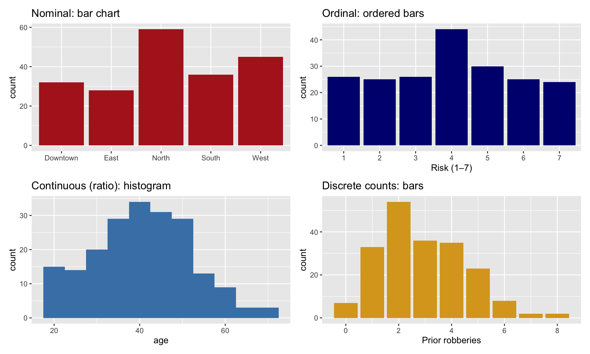
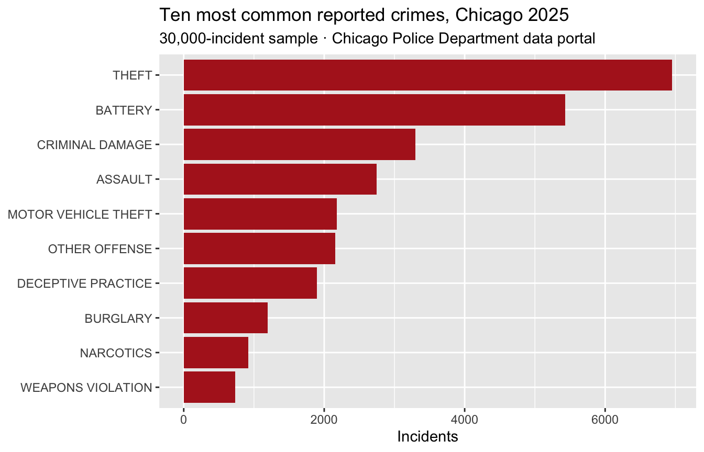

Demo Walkthrough · Session 1
First R commands, levels of measurement, and why the scale controls the math
What this page is. The Session 1 lecture demos, written down step by step. Every chunk below is self-contained — copy any of them into your own R session and they run as-is. Use this page to catch up after a missed class, or to re-run what happened on screen at your own pace.
What you’ll build
- Your first R commands: arithmetic, vectors, and the functions you’ll use all semester
- Logical indexing — asking a vector a question and keeping only the rows that say yes
- Factors, R’s container for categorical data
- The “scale determines the math” demos: why a mean zone is nonsense, and why °C and age play by different rules
- The 2×2 of plots that match each level of measurement
- A five-verb dplyr tour, and a first look at the real Chicago data we’ll use all semester
Setup
Everything below needs the tidyverse, plus patchwork for one plot-arranging trick near the end (install.packages("patchwork") once, if you don’t have it):
The case study: catching a bank robber
Session 1 opened with a serial offender hitting 40 banks across a city’s five zones, and a police department with nothing to go on but when and where each robbery happened. A crime analyst turned that thin dataset into a logistic regression predicting which zone would be hit next; the model pointed to the West Zone, units were deployed there, and the robber was arrested days later approaching a bank. The animated timeline, map, and deployment visuals are built with tools from later in the course — watch them in the Session 1 slides; by Session 12 you’ll be able to build the model yourself.
One more thing worth naming: you already reasoned like a Bayesian while watching that story. You started with a vague hunch spread across five zones (a prior), treated each new robbery as evidence that reshaped the hunch, read the model’s risk-by-zone output as an updated belief given the data, and then made a deployment decision under quantified uncertainty. That whole loop has a formal name — Bayesian updating. The formula shows up in Session 3, and the full machinery in Session 6, side by side with the other great tradition, the frequentist one.
The rest of this page is the part of Session 1 you can run right now: your first R commands, and the levels-of-measurement demos.
1 · Arithmetic, assignment, and your first functions
R is a calculator first:
3 + 5[1] 8The arrow <- assigns a value to a name. 1:10 builds the vector 1, 2, 3, …, 10, and functions like sum(), mean(), and sd() eat whole vectors at once:
Every function has a help page — get in the habit of pulling them up constantly:
?mean2 · Logical indexing — ask the data a question
Comparing a vector to a value asks the question element by element:
x > 5 [1] FALSE FALSE FALSE FALSE FALSE TRUE TRUE TRUE TRUE TRUEPut that question inside square brackets and R keeps only the values that answered TRUE:
x[x > 5][1] 6 7 8 9 10This one move — build a logical test, use it to subset — is the ancestor of every filter() you’ll ever write.
3 · Characters and factors
Text lives in character vectors; categories that will be analyzed belong in factors, which know their full set of possible levels:
student_names <- c("Alice", "Bob", "Carol")
is.character(student_names)[1] TRUE[1] red blue red
Levels: blue redNotice the printout: a factor reports its Levels — the categories that exist, whether or not each one appears in this particular vector.
4 · Scale determines the math
Session 1’s central claim: a variable’s level of measurement (nominal, ordinal, interval, ratio) determines what math is allowed. To demonstrate, simulate a small robbery-style dataset with one variable at each level:
set.seed(58) # same seed as the lecture, so these numbers match the slides
rob <- tibble(
zone = factor(sample(c("North", "South", "East", "West", "Downtown"), 200, TRUE)),
prior_robberies_in_zone = rpois(200, 3), # discrete count (ratio)
risk_likert = sample(1:7, 200, TRUE), # ordinal
temp_c = rnorm(200, 20, 5), # interval
age = pmax(18, round(rnorm(200, 40, 12))), # ratio
caught = factor(rbinom(200, 1, 0.35), labels = c("No", "Yes"))
)Nominal: the “mean zone” is meaningless
R will happily convert factor levels to their underlying codes and average them. That doesn’t make the answer mean anything:
# WRONG: the "mean zone" is meaningless
rob$zone |> as.numeric() |> mean()[1] 3.173.17 of… what? Zone 3.17 doesn’t exist — the numbers are just labels in disguise. The right math for nominal data is counts and percentages:
Ordinal: order yes, arithmetic no
A 1–7 risk rating is ordered, but the gaps between points aren’t guaranteed equal — so summarize with the median and IQR, and measure association with a rank-based (Spearman) correlation:
# A tibble: 1 × 2
med iqr
<dbl> <dbl>
1 4 3cor(rob$risk_likert, rob$prior_robberies_in_zone, method = "spearman")[1] 0.001707403(That correlation is essentially zero — as it should be, since we simulated these two variables independently. A good sanity check.)
Interval vs. ratio: the true-zero test
Temperature in °C is interval: differences are meaningful, but there’s no true zero — 0 °C is just where water freezes. Watch what unit conversion does to the mean:
mean(rob$temp_c) # about 20 °C[1] 20.07643mean(rob$temp_c * 1.8 + 32) # the same temperatures, in °F[1] 68.13757Same warmth, different number. “30 °C is 10 °C warmer than 20 °C” is fine; “20 °C is twice as hot as 10 °C” is meaningless — the ratio depends on which scale you happen to be using.
mean(rob$age)[1] 40.605Age is ratio: it has a true zero, so a 40-year-old really is twice as old as a 20-year-old. Differences and ratios both work.
5 · Plots that match the scale
The same logic governs graphics. One plot per level of measurement, arranged in a 2×2 with patchwork (p1 + p2 puts plots side by side; / stacks rows):
p1 <- ggplot(rob, aes(zone)) + geom_bar(fill = "firebrick") +
labs(title = "Nominal: bar chart", x = NULL)
p2 <- ggplot(rob, aes(factor(risk_likert, levels = 1:7))) +
geom_bar(fill = "navy") +
labs(title = "Ordinal: ordered bars", x = "Risk (1–7)")
p3 <- ggplot(rob, aes(age)) + geom_histogram(binwidth = 5, fill = "steelblue") +
labs(title = "Continuous (ratio): histogram")
p4 <- ggplot(rob, aes(prior_robberies_in_zone)) + geom_bar(fill = "goldenrod") +
labs(title = "Discrete counts: bars", x = "Prior robberies")
(p1 + p2) / (p3 + p4)
Categories get bars; continuous measurements get histograms; discrete counts get one bar per whole number. If you ever catch yourself histogramming a nominal variable, stop and check the scale.
6 · Five dplyr verbs you’ll use every week
The tidyverse works on tibbles (modern data frames). The |> symbol is the pipe: x |> f() means f(x) — “take x, then do f.” (Older code, including the Stanton book, writes it %>%; they work the same for everything we do.)
# A tibble: 4 × 12
model mpg cyl disp hp drat wt qsec vs am gear carb
<chr> <dbl> <dbl> <dbl> <dbl> <dbl> <dbl> <dbl> <dbl> <dbl> <dbl> <dbl>
1 Mazda RX4 21 6 160 110 3.9 2.62 16.5 0 1 4 4
2 Mazda RX4 W… 21 6 160 110 3.9 2.88 17.0 0 1 4 4
3 Datsun 710 22.8 4 108 93 3.85 2.32 18.6 1 1 4 1
4 Hornet 4 Dr… 21.4 6 258 110 3.08 3.22 19.4 1 0 3 1select() picks columns; filter() picks rows:
# A tibble: 4 × 4
model mpg cyl hp
<chr> <dbl> <dbl> <dbl>
1 Mazda RX4 21 6 110
2 Mazda RX4 Wag 21 6 110
3 Datsun 710 22.8 4 93
4 Hornet 4 Drive 21.4 6 110# A tibble: 4 × 12
model mpg cyl disp hp drat wt qsec vs am gear carb
<chr> <dbl> <dbl> <dbl> <dbl> <dbl> <dbl> <dbl> <dbl> <dbl> <dbl> <dbl>
1 Mazda RX4 21 6 160 110 3.9 2.62 16.5 0 1 4 4
2 Mazda RX4 W… 21 6 160 110 3.9 2.88 17.0 0 1 4 4
3 Hornet 4 Dr… 21.4 6 258 110 3.08 3.22 19.4 1 0 3 1
4 Valiant 18.1 6 225 105 2.76 3.46 20.2 1 0 3 1mutate() builds new columns; summarize() collapses many rows to a few numbers — here, per group with .by:
# A tibble: 4 × 4
model mpg hp mpg_per_hp
<chr> <dbl> <dbl> <dbl>
1 Mazda RX4 21 110 0.191
2 Mazda RX4 Wag 21 110 0.191
3 Datsun 710 22.8 93 0.245
4 Hornet 4 Drive 21.4 110 0.195# A tibble: 3 × 3
cyl avg_mpg n
<dbl> <dbl> <int>
1 6 19.7 7
2 4 26.7 11
3 8 15.1 147 · Coming attractions: real data, all semester
Starting in Session 2, the running example is real: a 30,000-incident sample of every crime reported in Chicago in 2025 (already loaded in Setup). Here’s the count-and-bar-chart pattern from this session, applied to it:
crimes |>
count(primary_type, sort = TRUE) |>
slice_head(n = 10) |>
ggplot(aes(n, fct_reorder(primary_type, n))) +
geom_col(fill = "firebrick") +
labs(title = "Ten most common reported crimes, Chicago 2025",
subtitle = "30,000-incident sample · Chicago Police Department data portal",
x = "Incidents", y = NULL)
Theft tops the list at about 7,000 incidents. And note what kind of variable primary_type is — nominal — which is exactly why this is a bar chart and not a histogram.
Try a variation
- Build a vector of seven ages with
c(). Compute the mean and SD, subset the values over 30, then use?seqto figure out how to generateseq(0, 1, by = 0.2). - Using the built-in
mpgdata (typempgin the console — ggplot2 ships it), find the top-3 models byhwyand the averagectybyclass. (Hints:arrange(desc(...)),slice_head(),summarize(..., .by = ...).) - In the Chicago chunk, swap
primary_typeforlocation_description. Where does crime actually happen in Chicago? - The ordinal trap: run
educ <- rep(1:5, each = 50)andincome <- rep(c(1, 2, 3, 4, 1000), each = 50), thencor(educ, income). Pearson’s r looks impressive — why is it misleading here? (Hint: are the education codes equally spaced in any real sense?)